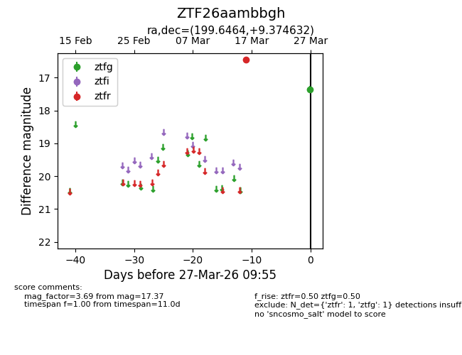
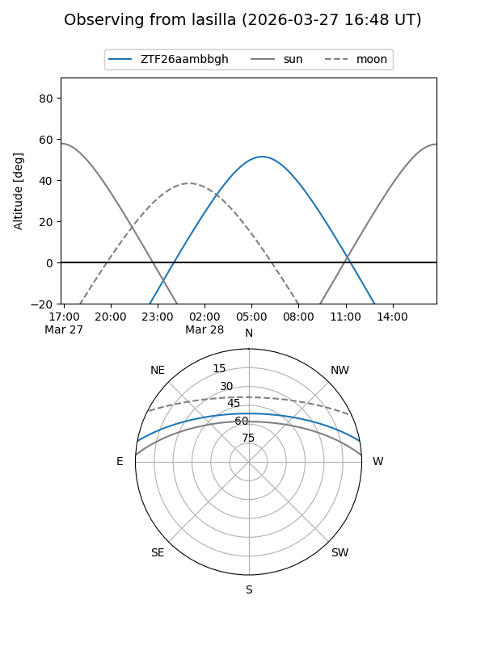
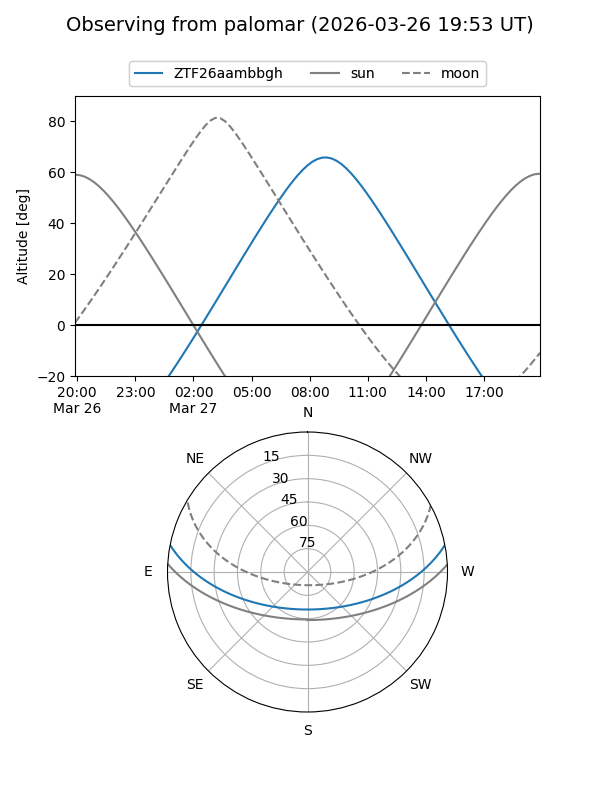

ZTF26aambbgh
Target ZTF26aambbgh at 2026-03-27 09:58
Aliases and brokers:
FINK: link
Lasair: link
ALeRCE: link
alt names
ZTF26aambbgh (ztf,fink_ztf)
Coordinates:
equatorial (ra, dec) = 199.6464,+9.37463
equatorial (HMS+DMS) = 13:18:35.13,+09:22:28.68
galactic (l, b) = (324.0575,+71.12441)
Flags:
Photometry:
last ztfg=17.37, ztfr=16.46
1 ztfg, 1 ztfr detections
Lightcurve

Visibility


Additional plots